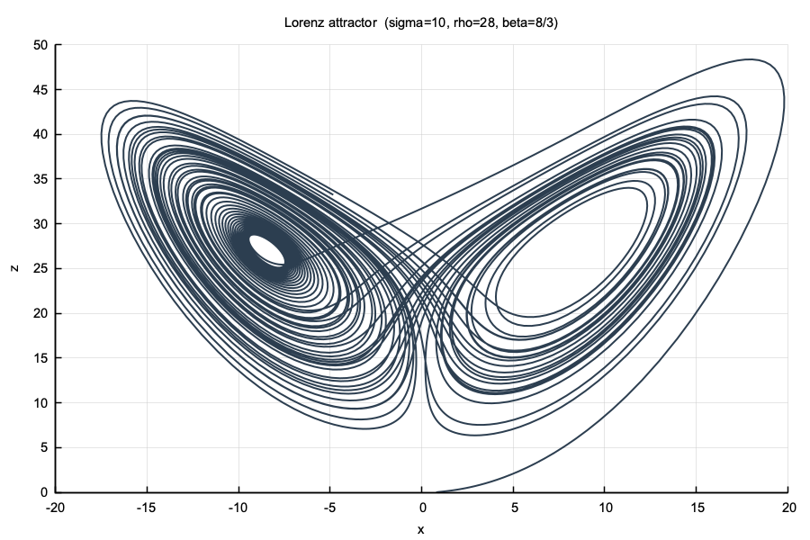
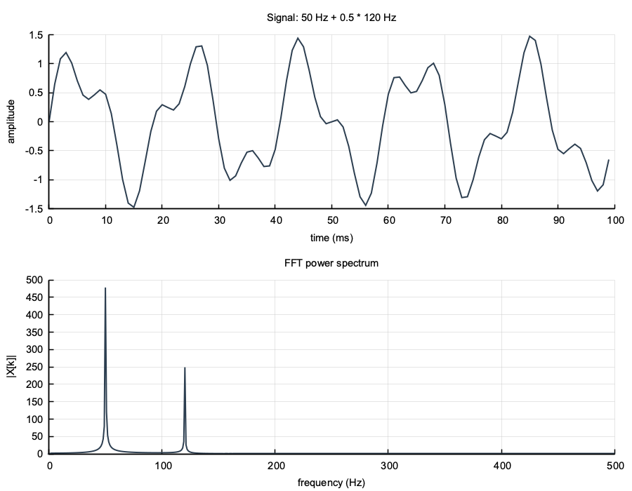
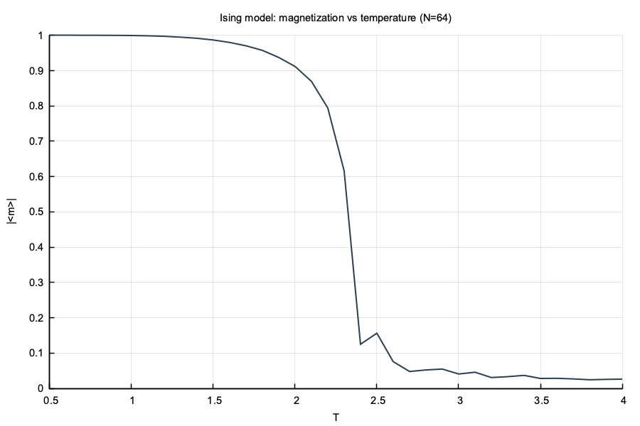

A C++ scientific computing library with hardware-aware kernels and efficient simulation apps.
It offers a unified API for linear algebra, iterative solvers, FFT, MCMC, PDE/ODE methods, and spatial data structures. Backend dispatch across BLAS, SIMD, OpenMP, and CUDA selects the fastest available path without requiring changes at the call site.
One include, one namespace. Solver, grid, integrator, and spatial structure compose directly.
seq, blocked, SIMD, BLAS, OpenMP, CUDA (selectable per call)
Diverse range of use case demos: SPH, Navier-Stokes, TDSE, EM, Ising, N-body.
Each module is extensively documented with the algorithm, math, and API.
GTest suite per module. Google Benchmark throughput suite.
Drop this in your CMake configuration:
include(FetchContent)
FetchContent_Declare(
numerics
GIT_REPOSITORY https://github.com/AdityaDendukuri/numerics
GIT_TAG main
)
FetchContent_MakeAvailable(numerics)
target_link_libraries(my_app PRIVATE numerics)Optional system packages: libopenblas-dev, libfftw3-dev, OpenMP, CUDA. See README: Dependencies.
#include "numerics.hpp"
int main() {
const double sigma = 10.0, rho = 28.0, beta = 8.0 / 3.0;
auto lorenz = [&](double, const num::Vector& s, num::Vector& ds) {
ds[0] = sigma * (s[1] - s[0]);
ds[1] = s[0] * (rho - s[2]) - s[1];
ds[2] = s[0] * s[1] - beta * s[2];
};
num::Vector y0 = {1.0, 0.0, 0.0};
num::Series xz;
num::ODEParams params = {.tf = 50.0, .rtol = 1e-8, .atol = 1e-10, .max_steps = 2000000};
// Runge-Kutta RK4(5): t=[0, 50], rtol=1e-8, atol=1e-10 -- each iteration is one accepted Step {t, y}.
for (auto [t, y] : num::rk45(lorenz, y0, params))
xz.store(y[0], y[2]);
num::plt::plot(xz);
num::plt::title("Lorenz attractor (sigma=10, rho=28, beta=8/3)");
num::plt::xlabel("x");
num::plt::ylabel("z");
num::plt::savefig("lorenz.png");
}
num::rk45#include "plot/plot.hpp"
#include "spectral/fft.hpp"
int main() {
const int N = 1024; const double fs = 1000.0; // N samples at fs Hz
num::Vector x(N); // real-valued time-domain signal
for (int i = 0; i < N; ++i)
x[i] = std::sin(2*M_PI*50.0*i/fs)
+ 0.5*std::sin(2*M_PI*120.0*i/fs);
// rfft output has N/2+1 bins: real input has conjugate symmetry,
// so only the non-redundant half [0 .. N/2] is stored
num::CVector X(N/2 + 1); // complex frequency-domain coefficients
num::spectral::rfft(x, X);
num::Series signal, spectrum; // lists of (x, y) pairs for plotting
for (int i = 0; i < 100; ++i)
signal.emplace_back(i/fs*1000.0, x[i]); // first 100 ms
for (int k = 0; k < (int)X.size(); ++k)
spectrum.emplace_back(k*fs/N, std::abs(X[k])); // bin k maps to freq k*fs/N Hz
num::plt::subplot(2, 1);
num::plt::plot(signal);
num::plt::title("Signal: 50 Hz + 0.5 * 120 Hz");
num::plt::xlabel("time (ms)"); num::plt::ylabel("amplitude");
num::plt::next();
num::plt::plot(spectrum);
num::plt::title("FFT power spectrum");
num::plt::xlabel("frequency (Hz)"); num::plt::ylabel("|X[k]|");
num::plt::savefig("fft_demo.png");
}
num::spectral::rfft; peaks at 50 Hz and 120 Hz#include "numerics.hpp"
#include "spatial/pbc_lattice.hpp"
#include "stochastic/boltzmann_table.hpp"
int main() {
const int N = 64, NN = N*N;
num::PBCLattice2D nbr(N); // precomputed up/dn/lt/rt neighbor indices (periodic boundaries)
std::vector<double> spins(NN);
std::mt19937 rng(42);
num::Series curve; // (T, |m|) points for the magnetization curve
for (double T = 0.5; T <= 4.0; T += 0.1) {
double beta = 1.0 / T;
auto acc = [&](int i) {
// 2 * s_i * (sum of 4 neighbors); accept via Boltzmann weight
double ns = spins[nbr.up[i]] + spins[nbr.dn[i]]
+ spins[nbr.lt[i]] + spins[nbr.rt[i]];
return num::markov::boltzmann_accept(2.0*spins[i]*ns, beta);
};
auto flip = [&](int i) { spins[i] = -spins[i]; };
for (int s = 0; s < 500; ++s) // 500 sweeps to equilibrate at each T
num::markov::metropolis_sweep_prob(NN, acc, flip, rng);
// measure |<m>| ...
curve.emplace_back(T, /* |m| */ 0.0);
}
num::plt::plot(curve);
num::plt::xlabel("T"); num::plt::ylabel("|<m>|");
num::plt::savefig("ising_demo.png");
}
num::markov::metropolis_sweep_prob + num::PBCLattice2D; |m| drops at Tc ≈ 2.27Vector, Matrix, SparseMatrix, BandedMatrix. Backend dispatch: seq, SIMD, BLAS, OpenMP, CUDA.
LU, QR, Thomas tridiagonal. Direct solvers for dense and structured systems.
Conjugate gradient, matrix-free CG, restarted GMRES, Jacobi, Gauss-Seidel.
Power iteration, inverse iteration, Rayleigh quotient, Lanczos, dense Jacobi sweeps.
Full SVD and randomized truncated SVD for large matrices.
Radix-2 FFT/IFFT, real FFT, precomputed plans. Optional FFTW3 backend.
Quadrature (trapz, Simpson, Gauss-Legendre, Romberg) and root-finding (bisection, Newton, Brent).
Metropolis sweep, precomputed-probability variant, umbrella sampling. Boltzmann acceptance table for discrete ΔE.
Online Welford mean/variance, histogram with WHAM reweighting, autocorrelation time.
CellList2D/3D, Verlet list, SPHKernel<Dim> (2D/3D), PBCLattice2D, connected_components.
Laplacians, gradient, divergence, curl. ScalarField3D/VectorField3D, FieldSolver, MagneticSolver. CrankNicolsonADI, diffusion_step_2d.
Euler, RK4, adaptive RK45. Velocity Verlet and Yoshida4 symplectic integrators. StepCallback and SymplecticCallback for trajectory recording.
Statevector simulation, quantum circuit builder, EDMD for unitary evolution.
SPH 2D/3D, Navier-Stokes, TDSE, EM fields, Ising MC, N-body gravity. Full interactive apps, each built directly on library modules.
Higher-order grid functions: 2D/3D Laplacians, fiber sweeps for ADI splitting, gradient, divergence, curl on Grid3D.
ScalarField3D, VectorField3D, FieldSolver (Poisson/gradient/curl), MagneticSolver (vector Poisson → B = ∇×A).
SPHKernel<Dim> unified 2D/3D template: cubic spline density, Morris Laplacian, spiky pressure gradient.
PBCLattice2D: precomputed periodic-boundary neighbor arrays for 2D square lattices; eliminates modulo in hot paths.
Template BFS labelling with pre-allocated flat queue. ClusterResult tracks largest component for Ising nucleation.
boltzmann_accept and make_boltzmann_table: precompute min(1,exp(-βΔE)) for discrete energy sets.
Algorithm, convergence, PCG, matrix-free CG, and Thomas tridiagonal solver.
Arnoldi process, Hessenberg least-squares, restarted GMRES(m), and preconditioning.
Lanczos tridiagonalization, Ritz pairs, convergence, and matrix exponential via Krylov.
Cooley-Tukey radix-2, twiddle factors, real FFT, FFTW3 backend, and plan reuse.
Roofline analysis of the Navier-Stokes projection solver: advect, pressure CG, project.
CrankNicolsonADI Strang splitting, explicit diffusion steps, 3D field solvers, stencil operators.
Symplectic vs. non-symplectic integrators: bounded vs. secular energy drift. Yoshida coefficients, FSAL Verlet, adaptive RK45 step control.
Generated by cmake --build build --target report. Build environment, test results, and throughput tables per module.